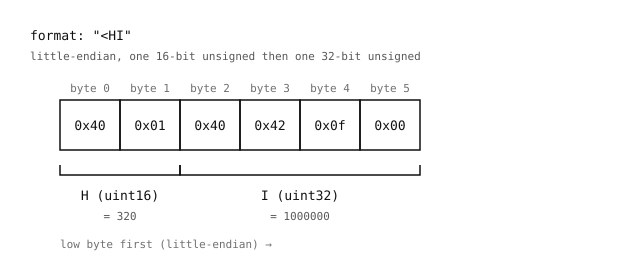

2.29. 구조체와 이진 데이터¶
struct 모듈은 Python 값을 고정된 이진 레이아웃으로 패킹하고, 바이트를 다시 Python 값으로 언패킹합니다. 이진 파일 형식, 네트워크 프로토콜, 또는 고정 크기 레코드를 주고받는 장치를 다룰 때 사용하면 좋습니다.
두 가지 함수가 대부분의 경우를 처리합니다:
struct.pack()– Python 값과 형식 문자열을 받아 정확한 레이아웃의bytes객체를 반환합니다.struct.unpack()– 형식 문자열과bytes객체를 받아 Python 값들의 튜플을 반환합니다.
2.29.1. 형식 문자열¶
형식 문자열은 레코드의 필드마다 하나의 코드를 나열합니다. 이 코드들은 각 필드의 크기와 해석 방식을 모두 기술합니다.
Python의 int는 고정 크기가 없으며, 할당하는 값에 맞춰 늘어납니다. 반면 이진 형식은 고정 크기를 가집니다. 즉 모든 정수 필드는 약속된 바이트 수를 사용합니다. struct는 크기 제한이 없는 Python 정수와 이러한 고정 크기 표현 사이를 변환합니다.
정수의 너비는 그것이 사용하는 비트 수입니다. 한 바이트는 8비트입니다. 소문자 코드는 부호 있는 변형이고, 대문자 코드는 부호 없는 것(음수가 아닌 값만)입니다:
b/B– 8비트 (1바이트). 부호 있음은-128..127, 부호 없음은0..255.h/H– 16비트 (2바이트). 부호 있음은-32768..32767, 부호 없음은0..65535.i/I– 32비트 (4바이트). 부호 있음은 약 ±20억, 부호 없음은 약 40억.q/Q– 64비트 (8바이트). 일상적인 용도에서는 사실상 제한이 없습니다.
예상하는 범위를 충분히 포함하는 너비를 선택하세요. 선언된 범위를 벗어난 값을 패킹하면 빌드에 따라 조용히 순환(wrap around)하거나 struct.error를 발생시킵니다.
나머지 일반적인 코드들은 부동소수점과 바이트 문자열을 위한 것입니다:
2.29.2. 바이트 순서¶
다중 바이트 정수는 메모리에 두 가지 방식으로 저장될 수 있습니다. 32비트 필드의 숫자 0x12345678은 다음과 같이 배치됩니다:
리틀 엔디언 – 최하위 바이트가 먼저:
78 56 34 12.빅 엔디언 – 최상위 바이트가 먼저:
12 34 56 78.
둘 다 같은 값을 인코딩하며, 필드의 어느 쪽 끝이 하위 바이트인지에 대해서만 다릅니다. 한 시스템에서 작성된 파일은 바이트 순서가 일치하지 않으면 다른 시스템에서 읽을 때 깨집니다.
형식 문자열의 선행 문자가 순서를 선택합니다:
<– 리틀 엔디언. x86과 ARM에서 일반적입니다.>– 빅 엔디언. 네트워크 프로토콜에서 일반적입니다.!– 네트워크 순서로,>와 동일합니다.
선행 문자가 없으면 네이티브 바이트 순서와 네이티브 정렬이 사용됩니다. < 또는 >를 명시적으로 설정하면 그 모호함이 제거되며, 파일을 읽거나 다른 머신과 통신할 때는 보통 이 방식이 바람직합니다.
참고
OpenMV Cam은 호스트 PC와 마찬가지로 리틀 엔디언입니다. 카메라 로컬 파일과 데스크톱을 오가는 이진 데이터에는 형식 문자열에서 <를 사용하세요. 네트워크 프로토콜과 빅 엔디언을 요구하는 사양의 형식에는 > (또는 !)를 사용하세요.

"<HI"는 16비트 값과 그 뒤의 32비트 값을 여섯 개의 리틀 엔디언 바이트로 패킹합니다.¶
2.29.3. 패킹¶
import struct
blob = struct.pack("<HI", 320, 1000000)
print(blob, len(blob))
출력:
b'@\x01@B\x0f\x00' 6
<HI 형식은 여섯 바이트를 생성합니다. H 필드에 두 바이트, I 필드에 네 바이트이며 모두 리틀 엔디언입니다. 형식이 기대하는 정확한 개수의 값을 전달하세요. 개수가 맞지 않으면 struct.error가 발생합니다.
2.29.4. 언패킹¶
width, count = struct.unpack("<HI", blob)
print(width, count)
출력:
320 1000000
struct.unpack()은 형식이 단일 필드를 기술하더라도 항상 튜플을 반환합니다. 가독성을 위해 같은 줄에서 언패킹하세요.
2.29.5. 고정 길이 바이트 문자열¶
s 코드는 바이트 덩어리를 있는 그대로 읽거나 씁니다. 개수는 s 앞에 붙습니다. 즉 4s는 “단일 바이트 문자열로 취급되는 네 바이트”를 의미합니다. 이는 레코드에 매직 값, 고정 크기 태그, 또는 패딩된 이름 필드를 삽입하는 일반적인 방법입니다:
header = struct.pack("<4sHI", b"OMV0", 320, 1000000)
print(header)
출력:
b'OMV0@\x01@B\x0f\x00'
처음 네 바이트는 리터럴 매직 b"OMV0"이고, 다음 두 바이트는 H 필드(320), 마지막 네 바이트는 I 필드(1000000)입니다. 언패킹하면 바이트를 다시 bytes 객체로 반환합니다:
magic, width, count = struct.unpack("<4sHI", header)
print(magic, width, count)
출력:
b'OMV0' 320 1000000
원본 값이 선언된 개수보다 짧으면 결과는 오른쪽에 \x00으로 패딩되고, 더 길면 초과된 바이트는 조용히 버려집니다:
struct.pack("4s", b"hi") # b'hi\x00\x00'
struct.pack("4s", b"toolong") # b'tool'
개수는 문자 수가 아니라 바이트 길이입니다. s는 원시 바이트를 다루므로, 다중 바이트 문자를 포함하는 UTF-8 문자열은 먼저 .encode()하여 바이트 단위로 세어야 합니다.
2.29.6. 크기 계산과 부분 읽기¶
struct.calcsize()는 형식 문자열이 소비하는 바이트 수를 반환합니다:
struct.calcsize("<HI") # 6
파일에서 레코드 스트림을 읽을 때는 레코드당 정확히 그만큼의 바이트를 읽으세요:
record_size = struct.calcsize("<HI")
with open("data.bin", "rb") as f:
while True:
chunk = f.read(record_size)
if len(chunk) < record_size:
break
width, count = struct.unpack("<HI", chunk)
print(width, count)
파일 끝에서의 짧은 읽기는 record_size보다 작은 덩어리를 생성합니다. 부분 레코드를 언패킹하려고 시도하기보다 이를 스트림의 끝 조건으로 취급하세요.